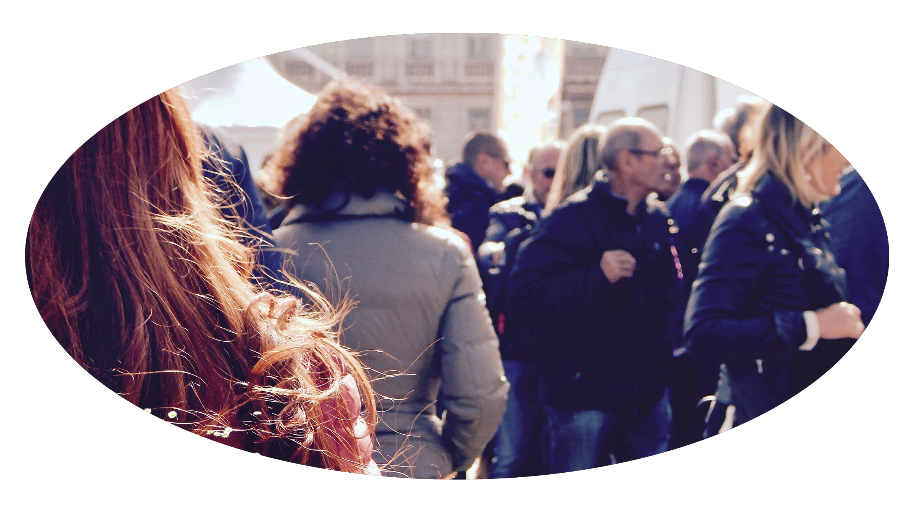

General behavior
Humans are a very social species. In their natural habitat, some humans form a bond with another human that lasts until death. If you are to adopt a human, you should get at least two. The more the merrier, but make sure you have sufficient space for each animal to roam around. Additionally, humans are very picky with their friends, so be cautious that they do not begin to attack one another. This may result in your human's death. If your humans do not like each other, you may contact HACU to switch a human out for another, or you can separate them and purchase two humans to serve as their friends.
Humans are an intelligent species and will require a sufficient amount of items to interact with. They are easily bored, and extended periods of boredom can lead to depression, anxiety, and other issues. HACU will provide entertainment products on each purchase of a human. Our entertainment products have been taken from their original planet itself. Such products include written stories, small electronic devices designed for addiction that you may wish to limit, paper and graphite materials, so the human can rub graphite residue onto paper to create images, and small creatures taken from their planet that humans seem to enjoy taking care of.
